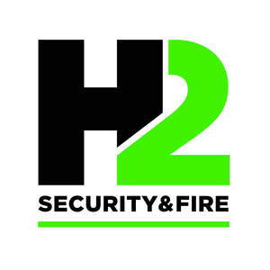

Trade Mark Journal No.2025/021 23 May 2025
UK00004199197 6 May 2025 (7,9,11,37,45)

- Class 7
- Electronic door closing system; Door closers, electric; Electronic door openers; Hydraulic gate operators; Electric gate operators; Door closers, hydraulic; Hydraulic door closers; Automatic door apparatus [electric]; Electric motors for heating installations.
- Class 9
- Security alarms; Keypads for security alarms; Personal security alarms; Control panels for security alarms; Security alarm systems [other than for vehicles]; Alarms; Anti-intrusion alarms; Security cameras; Safety alarms [other than for vehicles]; Safety, security, protection and signalling devices; Burglar alarms; Alarm installations; Electronic burglar alarms; Alarm systems; Alarms and warning equipment; Personal alarms; Security warning apparatus; Alarm monitoring systems; Alarm sensors; Fire alarms; Alarms (Fire -); Remote alarms [other than anti-theft for vehicles]; Automatic security barriers; Warning alarms [other than for vehicles]; Security surveillance apparatus; Security software; Electrical and electronic burglar alarms; Smoke alarms; Theft prevention alarms [other than for vehicles]; Gas alarms; Motion sensors for security lights; Photocells for use with security lighting; Electric alarms; Pool alarms; Electronic security systems for home network; Security apparatus for elevators; Sound alarms, other than for vehicles; Security control apparatus; Water leakage detection alarms; Alarm panels; Electrical alarm instruments (anti-theft -) [other than for vehicles]; Personal alarm apparatus; Electronic personal alarm devices; Closed circuit TV [CCTV] software; Surveillance cameras; Closed circuit television systems (CCTV); Video surveillance cameras; Network surveillance cameras; Network monitoring cameras for surveillance; Cameras; Network monitoring cameras namely for surveillance; Motion-activated cameras; Video cameras; Video surveillance systems; Network monitoring cameras; 360º video cameras; 360º cameras; Infrared cameras; Electric alarms for fire; Fire extinguishers; Fire detectors; Electric alarms for smoke; Alarm bells; Alarm bells, electric; Bells (Alarm -), electric; Electric alarm bells; Fire sensors; Fire extinguishing systems; Fire detection apparatus; Smoke alarm testers; Fire extinguishing apparatus; Fire blankets; Fire detection software; Gas leak alarm systems; Sound alarms; Fire extinguishing apparatus for automobiles; Fire detecting apparatus; Alarm signalling transmitters; Fingerprint door locks; Electronic door locks; Door opening and closing detecting sensors; Door locks (Electric -); Biometric fingerprint door locks; Smart door locks; Central door locking apparatus; Electronic entry systems; Access control devices; Access control systems (Automatic -); Access control units (Automatic -); Access control apparatus (Automatic -); Access control installations (Automatic -); Biometric access control systems; Access control systems (Electric -); Electrical access control apparatus; Access control apparatus (Electric -); Computer programs for the enabling of access or entrance control; Computer programs for enabling access or entrance control; Access control installations (Electric -); Access control units (Electric -); Electronic access control system for buildings; Electronic access control systems for interlocking doors; Remote control apparatus; Area Access Control [AAC] safety light curtains; Access control cards [encoded or magnetic]; Control devices (Automatic -); Remote control units; Software to control building environmental, access and security systems; Access security apparatus (Electric -); Electronic key fobs being remote control apparatus; Emergency warning lights; Lighting (Batteries for -); Beacon lights [safety equipment]; Home automation software; Home automation devices; Computer systems for automated vehicle control; Data cables; Data transmission cables; Data wires; Data communications hardware; Data networks; Data transmission networks; Network cabling; Data terminals; Data transmitters; Data switches; Electrical cabling; Electrical wiring installations; Insulated cable for electrical installations; Electrical cables; Electrical wires; Electrical components; Electrical cable; Electrical connectors; Control installations (Electric -).
- Class 11
- Security lighting; Lighting being for use with security systems; Motion sensitive security lights; Emergency lighting; Emergency lighting installations; Emergency lights; Emergency lighting apparatus; Emergency lamps; Lighting; Lighting and lighting reflectors; Battery powered fluorescent emergency lighting units; Luminaires for emergency use; Battery powered incandescent emergency lighting units; Lamps for security lighting; Electrical lamps for outdoor lighting; Electrical lamps for indoor lighting; Electric lighting; Lighting lamps; Electrical lighting fixtures; Lighting tracks [lighting apparatus]; Indoor fluorescent electrical lighting fittings; Indoor electrical lighting fixtures; Outdoor lighting; Luminaires for outdoor lighting; Lanterns for lighting; Electrical lighting fixtures for use in hazardous locations; Electric lighting fixtures; Lighting installations; Installations for lighting; Lighting fittings; Installations for electric lighting; Electric lighting installations; Lamps for electrical installations; Electric heating installations; Electrical luminaires; Electrical fans being parts of household ventilation installations; Electrical fans being parts of household airconditioning installations; Electrical boilers; Electric indoor lighting installations; Heating installations; Installations for heating; Lights for external installation; Electrical discharge lighting fixtures.
- Class 37
- Maintenance and servicing of security alarms; Installation of burglar alarms; Alarms (Installation of -); Installation of security and safety equipment; Fire alarms (Installation of -); Maintenance of fire alarm installations; Installation of security systems; Burglar alarm installation; Services for the installation of alarms; Installation of security system; Repair of security locks; Repair of alarms; Alarms (Repair of -); Fire alarm installation; Maintenance and servicing of fire alarm systems; Installation, maintenance and repair of burglar alarms; Fire alarms (Repair of -); Burglar alarm repair; Repair of cameras; Burglar alarm installation and repair; Installation of residential security apparatus; Fire alarm repair; Fire alarm installation and repair; Repair or maintenance of fire alarms; Maintenance and repair of fire alarm systems; Fire detection system installation; Installation of fire detection systems; Installation of fire evacuation systems; Installation of physical access control; Installation of access control systems; Maintenance and repair of physical access control; Maintenance and repair of access control systems; Installation of Access Control as a Service (ACaaS) hardware; Installation of lighting systems; Repair of lighting apparatus; Lighting apparatus repair; Lighting apparatus installation; Installation of lighting apparatus; Repair or maintenance of electric lighting apparatus; Installation of gates; Installation of building automation equipment; Maintenance and repair of gates; Installation of door closers; Installation of door openers and closers; Wiring of offices for data transmission; Installation of data network apparatus; Maintenance of data communication networks; Maintenance and repair of data communications networks; Installation of electrical earthing; Installation of electrical grounding; Electrical installation services; Installation of electrical and generating machinery; Repair of electrical equipment and electrotechnical installations; Installation of plumbing; Electric appliance installation ; Installation and maintenance of solar thermal installations; Electric appliance installation and repair; Installation and maintenance of photovoltaic installations; Renovation of electrical wiring; Installation of plumbing systems; Heating equipment installation; Electrical wiring services; Renovation, repair and maintenance of electrical wiring; Installation and repair of heating equipment; Maintenance and repair of electrical earthing systems; Installation of motors; Repair of electrical equipment; Installation, repair and maintenance of heating equipment; Antenna installation and repair; Repair or maintenance of electric cooking apparatus and installations; Installation, maintenance and repair of telecommunications equipment; Installation and repair of air-conditioning apparatus; Installation of solar heating systems; Maintenance and repair of solar thermal installations; Installation, maintenance and repair of air-conditioning apparatus; Maintenance and repair of gas and electricity installations; Installation and repair of telecommunications hardware; Maintenance and repair of solar heating installations; Installation of communication equipment; Installation of apparatus for heating; Installation of heating apparatus; Roofing installation; Installation of roofing; Telephone installation and repair; Maintenance and repair of solar power installations; Installation of electric heat tracing; Maintenance of commercial electrical systems; Installation of electric and electronic equipment in automobiles; Computer installation and repair; Installation of electric light and power systems; Computer hardware and telecommunication apparatus installation, maintenance and repair; Maintenance and repair of electronic installations; Installation of lightning conductors; Installation of audiovisual equipment; Maintenance and repair of heating installations; Installation of building insulation; Telephone installation; Installation of apparatus for air-conditioning; Installation, maintenance and repair of computer hardware; Installation of thermal insulation for buildings; Electrical contractor services; Installation of residential solar panel power systems; Installation of radio equipment; Computer installation and maintenance services.
- Class 45
- Monitoring burglar and security alarms; Monitoring of alarms; Monitoring alarms; Monitoring fire alarms; Monitoring of fire alarms; Monitoring of security systems; Security monitoring services; Alarm monitoring services; Medical alarm monitoring; Security services; Security assessment of risks; Security services for the protection of property.
H2 security and fire Ltd